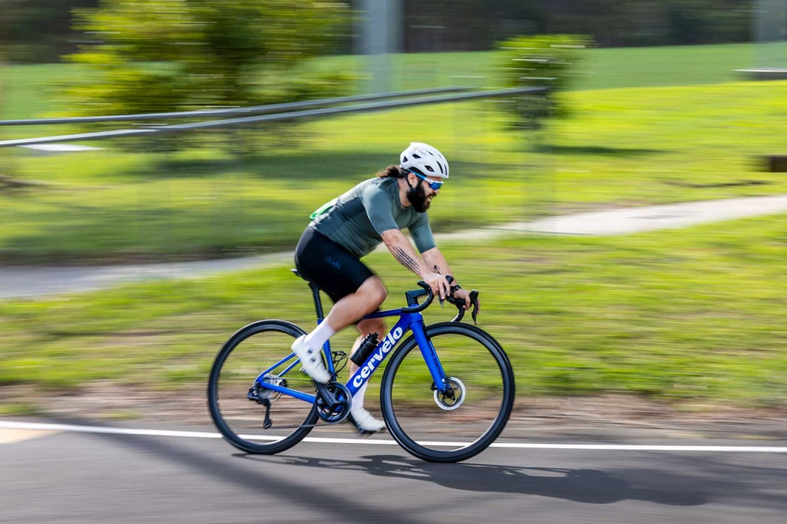
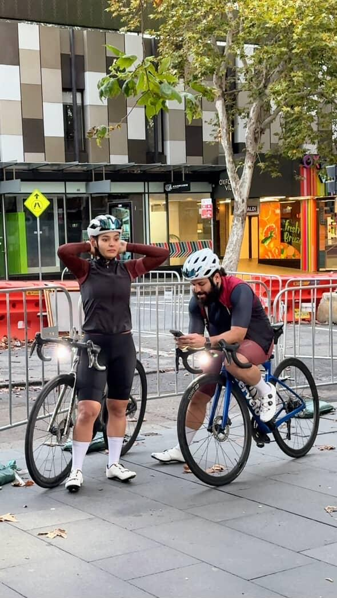

For us, cycling was never just a hobby. It was the thing that brought us to the people we didn't know we were looking for. Sydney's roads introduced us to a community that showed up rain or shine, that waited at the top of hills and celebrated at the bottom, that turned strangers into family one ride at a time.

The founders
Somewhere between the early starts and the long descents, we stopped counting the kilometres and started counting the people.
Together we've chased horizons across Australia — not to compete with the world, but to discover it. We've stood on start lines, crossed finish lines, and found that the moments worth keeping always happen somewhere in between. The climb that broke you and then didn't. The finish you didn't think was possible. The ride where you looked around and realised these people had become your people.
How it started
And then something shifted. After years of collecting those memories, we wanted to hold them differently. Not in a folder. Not on a screen. In your hands.
That's where Traced was born — from a dining table covered in prototypes and the simple belief that the objects tied to our greatest experiences deserve to exist in the physical world. Your first race. The trail that changed you. A gift for the person who rode beside you when it mattered most.
We build each piece to order, by hand, in Sydney. Every route is unique. Every object is permanent. Because the rides that shape you deserve more than a screenshot — they deserve something you can hold, display, and keep for years.
Traced is for the communities built on movement. For the riders who know the journey is never really about the destination — it's about everything that gets made along the way.
Your ride deserves to be remembered.
We'll make sure it is.